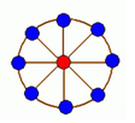
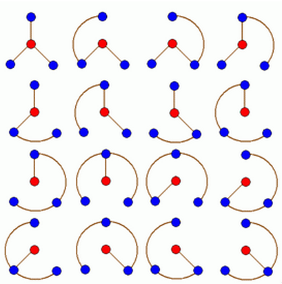

轮状病毒有很多变种，所有轮状病毒的变种都是从一个轮状基产生的。一个 $N$ 轮状基由圆环上 $N$ 个不同的基原子和圆心处一个核原子构成的，$2$ 个原子之间的边表示这 $2$ 个原子之间的信息通道。如下图所示

$N$ 轮状病毒的产生规律是在一个 $N$ 轮状基中删去若干条边，使得各原子之间有唯一的信息通道，例如共有 $16$ 个不同的 $3$ 轮状病毒，如下图所示

现给定 $n(n \le 100)$，编程计算有多少个不同的 $n$ 轮状病毒
第一行有 $1$ 个正整数 $n$。
计算出的不同的 $n$ 轮状病毒数输出。
3
16
 Comet OJ
Comet OJ